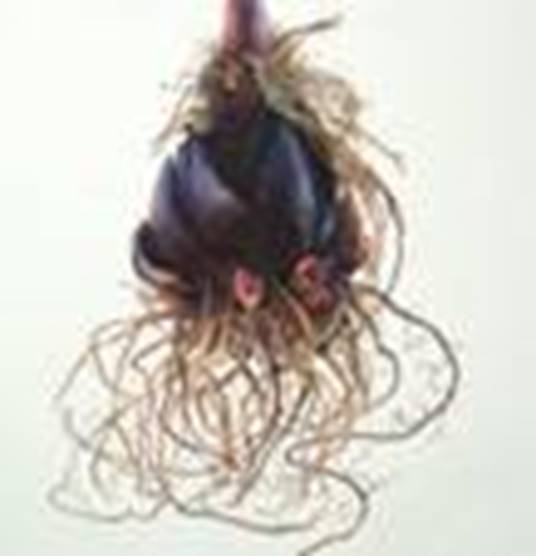
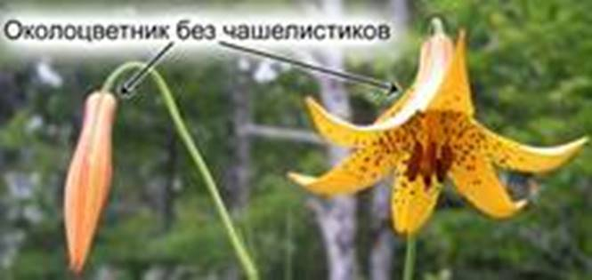
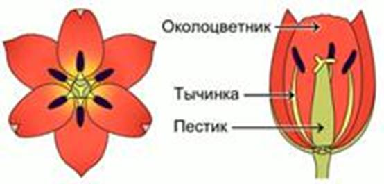
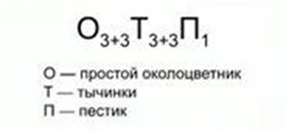
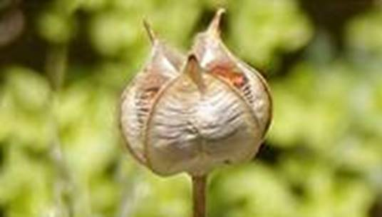

Лилейные однодольные растения. Зародыш имеет 1 семядолю. Корневая система мочковатая (см. Рис. 1).

Рис. 1. Корневая система однодольных
Жилкование листьев дуговое или параллельное. Листья сидячие, расположены поочередно или розеткой. Околоцветник простой (см. Рис. 2).

Рис. 2. Цветок лилии
Большинство представителей – однолетние травы, имеют корневище или луковицу.
Строение цветка лилейных (см. Рис. 3)

Рис. 3. Цветок тюльпана
Цветки имеют простой околоцветник, 6 лепестков, расположенных в 2 слоя, 6 тычинок, 1 пестик. Правильные.
Формула цветка лилейных (см. Рис. 4):

Рис. 4. Формула цветка лилейных
Соцветие – кисть (ландыш).
Плоды – сухие коробочки, раскрываются 3 створками (см. Рис. 5) (тюльпан), ягоды (ландыш).

Рис. 5. Плод тюльпана
Овощные культуры: лук, чеснок.
Ядовитые и лекарственные: ландыш майский, вороний глаз.
Декоративные: лилия, гиацинт, пролеска, тюльпан.
Декоративное значение в помещении – алоэ, драцена.
Родина огородного лука – Китай и средняя Азия. Подземная часть – видоизмененный побег – луковица, и придаточные корни. Цветки собраны в шаровидное соцветие. Плод – коробочка.
Резкий запах лука обусловлен обилием эфирных масел. Содержит много сахаров, вкус которых перекрывают эфирные масла.
Состав этого семейства неоднократно пересматривался учеными. Поэтому некоторые растения больше не входят в состав этого семейства. Это агавовые, луковые, амариллисовые, спаржевые, ландышевые и гиацинтовые.
В Америке люди выращивают агавы, как сельскохозяйственные культуры. Их используют для получения прочных волокон. Из них изначально изготавливалась джинсовая ткань.
Побеги спаржи и смилакса используют в пищу.
Лук и чеснок богаты фитонцидами – летучими веществами, которые угнетают другие живые организмы, в особенности, бактерии. Поэтому их используют в народной медицине.
Ландыши содержат вещества, влияющие на сердечную деятельность человека.
Список литературы
1. Биология. Бактерии, грибы, растения. 6 кл.: учеб. для общеобразоват. учреждений / В.В. Пасечник. – 14-е изд., стереотип. – М.: Дрофа, 2011. – 304 с.: ил.
2. Тихонова Е.Т., Романова Н.И. Биология, 6. – М.: Русское слово.
3. Исаева Т.А., Романова Н.И. Биология, 6. – М.: Русское слово.
Дополнительные рекомендованные ссылки на ресурсы сети Интернет
1. Ecosystema.ru (Источник).
2. Biolicey2vrn.ucoz.ru (Источник).
3. Medgrasses.ru (Источник).
Домашнее задание
1. Биология. Бактерии, грибы, растения. 6 кл.: учеб. для общеобразоват. учреждений / В.В. Пасечник. – 14-е изд., стереотип. – М.: Дрофа, 2011. – 304 с.: ил. – с. 248, задания и вопросы 2, 4, 5 (Источник)..
2. Какая формула цветка характерна для лилейных растений?
3. Какое значение имеют лилейные растения? Приведите примеры.
4. * Узнайте, какие еще растения, кроме чеснока и лука, содержат фитонциды. Как человек использует их свойства?